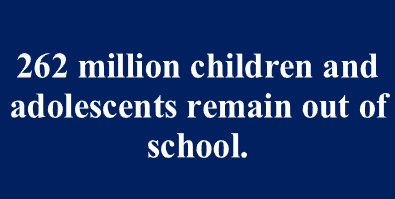

"Self-ED wishes to make quality education accessible for every child"
There are several barriers for children living in poverty with regards to accessing quality education. Quality education is one of the United Nations sustainability goals and it focuses on ensuring inclusive and equitable quality and promote lifelong learning opportunities for all (United Nations, 2015).

In developing countries children still
have limited access to good quality education due to various reasons such as language barriers, gender roles and reliance on child labour (Rueckert, 2019).
Self-Ed builds on some of the targets the United Nations have set with regards to Quality education. One of the targets is that by 2030 all girls and boys complete free, equitable and quality primary and secondary education (United Nations, 2015). The second target is to eliminate gender disparities in education and ensure equal access to all levels of education (United Nations, 2015).
Research has shown that access to education improves many other issues in society such as health, growth of economy, longevity of a society and can even combat climate change
(Rueckert, 2019).
In developing countries children still have limited access to good quality education due to various reasons such as language barriers, gender roles and reliance on child labor (Rueckert, 2019).
In a rapport by Global Citizen, they have listed the 10 greatest challenges in global education that need to be addressed in order achieve Quality Education by 2030 (Rueckert, 2019).
Some of the challenges are: A lack of funding for education, having no teacher or having an untrained teacher, no access to a classroom, gender, long travel distance between home and school, the expense of education etc. (Rueckert, 2019).